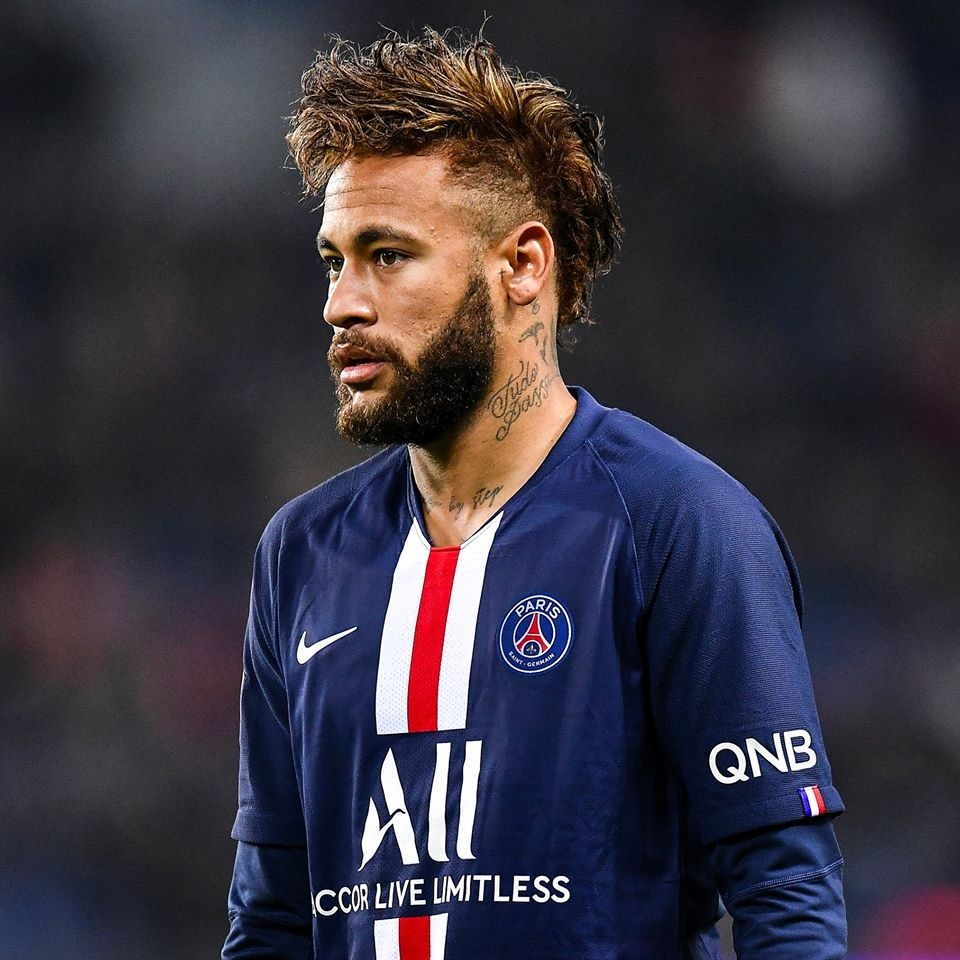

Neymar é um futebolista brasileiro, considerado um dos maiores da história. Ganhou diversos títulos jogando pelo Santos Futebol Clube, onde iniciou sua carreira aos 11 anos de idade.Revelado pelo Santos em 2009, ganhou diversos títulos com o clube, incluindo uma Copa do Brasil e uma Libertadores. Durante seu tempo de Santos, ganhou por duas vezes seguidas o prêmio de melhor jogador sul-americano do ano, em 2011 e 2012 e um prêmio Puskás, de gol mais bonito do ano.Em 2013, foi vendido ao Barcelona,após ser protagonista da conquista da Copa das Confederações de 2013 pela Seleção Brasileira.
Neymar chegou à marca de 31 títulos como profissional. Pelo PSG, esse foi o seu 9º título desde que chegou ao clube, na temporada 2017/18. Pelo Barcelona, clube em que mais ganhou títulos, o atacante conquistou 10. Pelo Santos, foram outros 6, assim como na seleção brasileira
Pela Seleção Brasileira é o camisa 10, principal jogador e o segundo jogador que mais marcou com a camisa da Seleção, ficando atrás apenas de Pelé. Disputou a Copa do Mundo FIFA de 2014, porém sofreu uma grave lesão na coluna durante as quartas-de-finais contra a Colômbia, o que o afastou da competição.
No ano anterior havia conquistado o título da Copa das Confederações, sendo a principal estrela brasileira durante os cinco jogos da campanha.